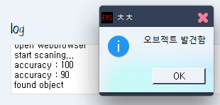
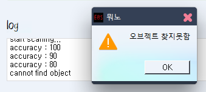

온라인 클래스 매크로는 기본적으로 옆에 있는 이 "확인 버튼"을 인식해서 클릭함으로 작동함
이 때 Check 버튼을 누르면 화면 안에 확인 버튼이 있는지 검사해줌
아래 log를 보면  accuracy : 90에서 fouond object가 뜬걸로 보아
정확도 100%에서는 확인버튼을 찾지 못하고 90%에서 찾은걸 확인 할 수 있음
정확도 80%이하에서는 색이 비슷한 모든 오브젝트를 잘못 인식할 수 있으므로 80% 아래는 검사하지 않음

위 사진에서는 accuracy 100 ~ 80 에서 찾지 못해 cannot found object를 띄우고 경고창을 띄움
※Use log 옵션을 체크해놓으면 log에 나타나는것을 기록해 나중에 확인 할 수 있음※
추가로 유튜브 자동재생 버튼이 체크되어있는지 확인함